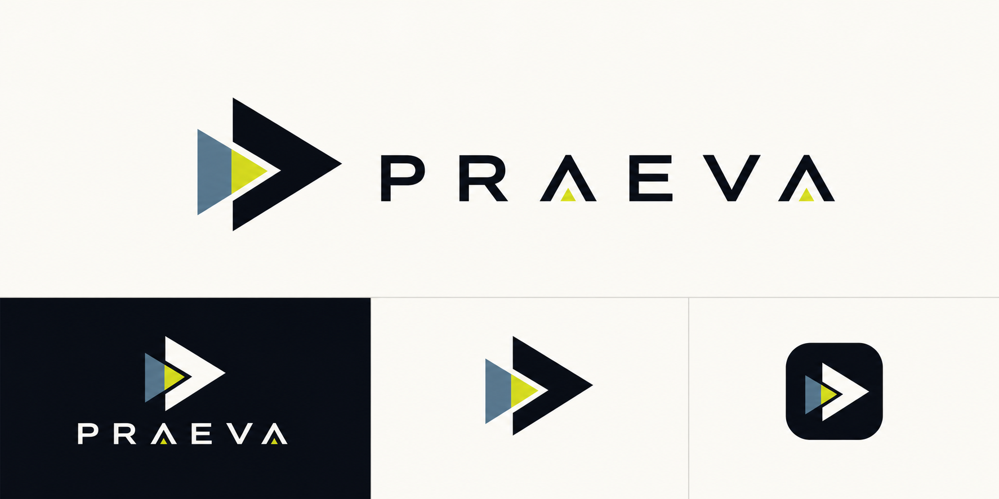

Decision view
Strategic case intelligence
Praeva
See the structure before the decision hardens.
Praeva is the boldest intelligence-platform route: forward-looking, analytical, and a little more strategic than legal. It frames the product as early advantage for complex cases.
- 9
- emerging case paths
- 31
- decision signals
- 48h
- ahead of review

Concept anchor
The forward aperture becomes a strategic case radar.
The saved concept uses black ink, ivory, acid yellow, and steel blue. This mockup keeps the sharpness and makes the product feel like a command layer for decisions that need to happen before the case closes in.
Strategic workflow
For teams who need to know what matters next.
Expose structure
Identify the emerging relationships, gaps, and high-value evidence lines inside a matter.
Rank decisions
Prioritize actions by confidence, impact, deadline, and the source material already available.
Advance the case
Turn reviewed signals into next steps for analysts, investigators, legal teams, and field partners.